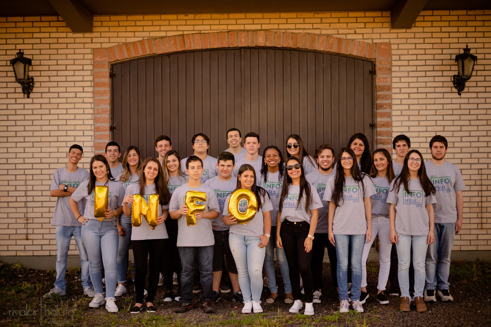
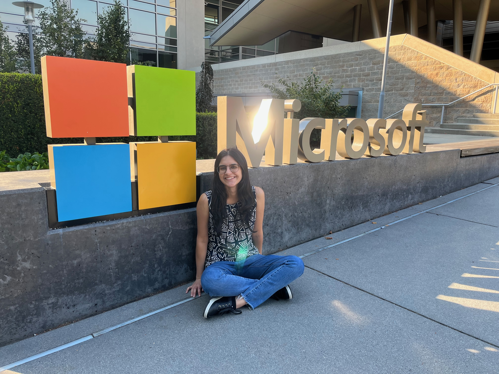
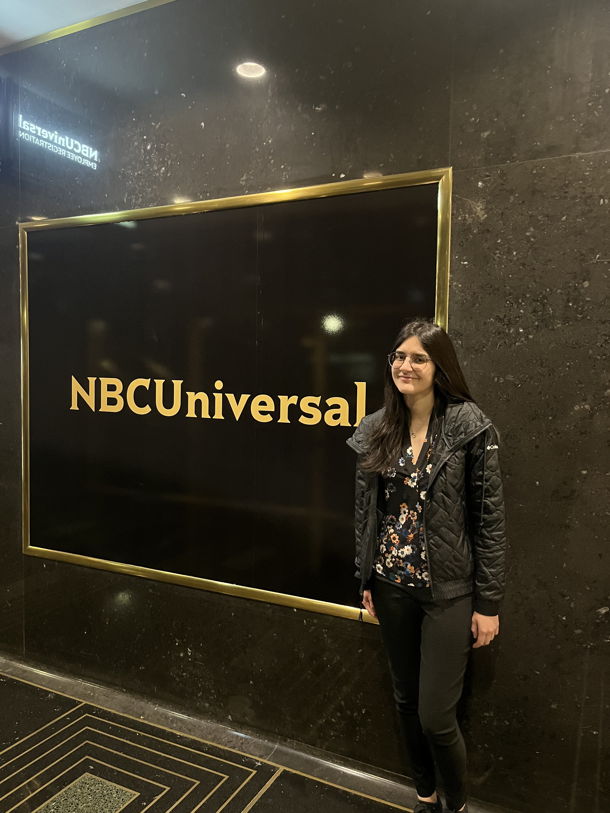
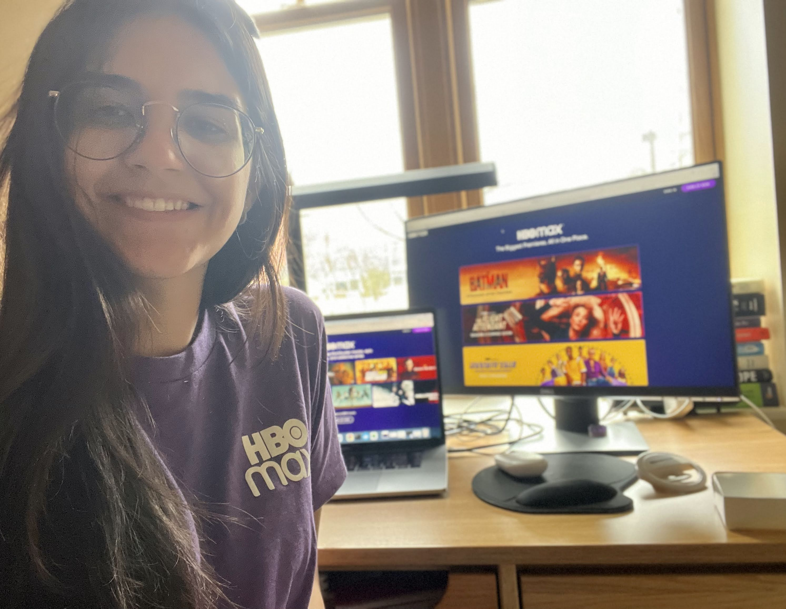

Welcome to my website! I'm a Software Engineer 2 at Microsoft in WA. I graduated Magna Cum Laude from Carleton College in Computer Science with a Mathematics minor. While at school, I completed three internships at Microsoft, a software engineering internship at NBCUniversal, and a data engineering internship at HBO Max. I'm a Palantir Future Fellow, Fundação Estudar Tech Fellow, and Activision Blizzard King scholar.
Tool to help users understand the additions to an article, and the relationship between page views and edits. Our extension highlights additions to the Wiki pages between a specified date and the present and renders a graph of page views and edits during different time periods. Try it our here Chrome Extension
Created a website with 120+ internships, exploratory programs, interview prep and scholarships for CS students. Repo has 235+ organic stars
Instructions: Move Harry (a,w,s,d) and get as many coins as possible, but do not get killed!
Project made by 15 year old me using Canvas and Jquery. See the code in GitHub (I know, quite messy).
Gathered the requirements and de-signed the database. Developed the website back-end and the search engine. Created the admin system to manage the museum's collection.
I'm a Carleton College 2023 grad. I graduated Magna Cum Laude (Top 15% of my class) with a BA with Distinction in Computer Science and a Mathematics minor.
I'm also a Informatics for Internet technician from Instituto Federal Sul-rio-grandense, which is the US equivalent of an Associate's degree.
I'm currently a Software Engineer 2 at Microsoft with 1.5 YOE. While at college, I complete 5 internships - Three times at Microsoft (1x Explore Intern, 2x SWE Intern), once as a Data Engineer Intern at HBO Max and once as a Software Engineer Intern at NBCUniversal
  